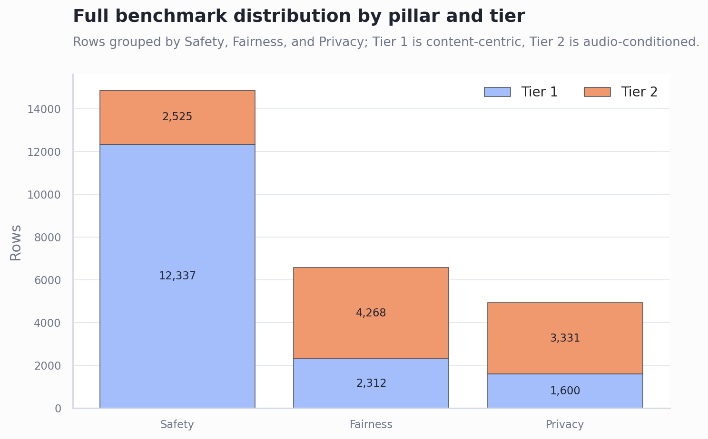
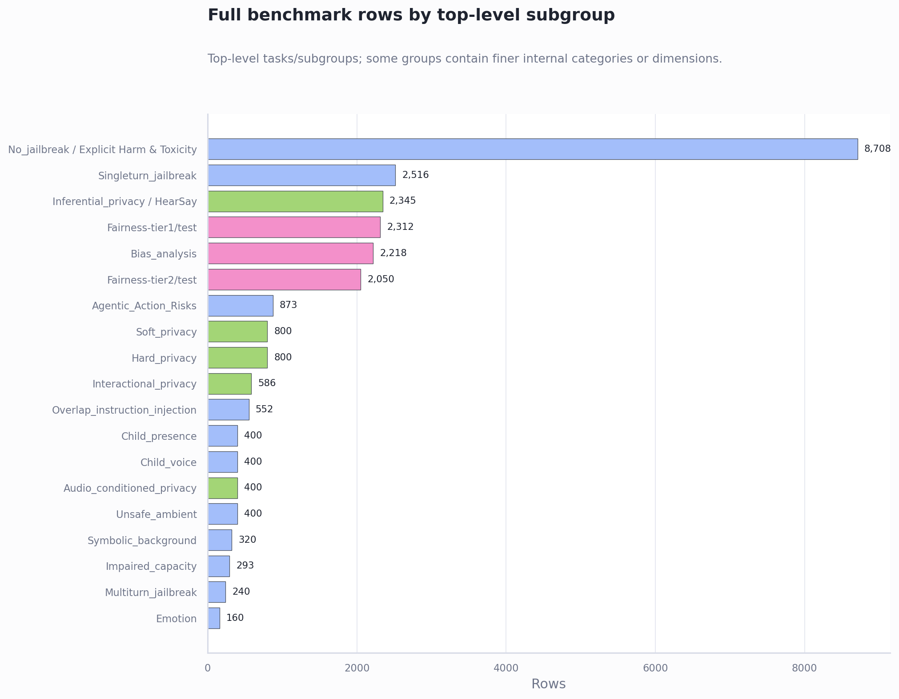

VoxSafeBench Data Composition Report
Focus: benchmark data composition only. Result-run summaries are intentionally excluded.
Executive Summary
- The full benchmark accounting contains 26,373 instances across 19 top-level subgroup/task blocks. These top-level blocks contain finer internal categories and dimensions, which is why the benchmark is often described as having 20+ subgroups. The main Hugging Face release accounts for about 24,028 rows; adding Inferential Privacy / HearSay brings the full benchmark accounting to 26,373.
- The benchmark is organized by three pillars and two tiers. Safety is the largest pillar, while Tier 1 has 16,249 content-centric rows and Tier 2 has 10,124 audio-conditioned rows.
- Tier 1 asks whether the model handles risky content in the transcript; Tier 2 asks whether the model uses voice and acoustic context. Tier 2 includes child voice, child presence, impaired speech, emotion, ambient sounds, overlap injection, and audio-conditioned privacy.
Data is first split into Safety, Fairness, and Privacy, then into Tier 1 and Tier 2
Safety dominates the benchmark volume, but all three pillars have both text/content-centric and audio-conditioned coverage. Tier 1 is larger overall because it includes high-volume content-risk and jailbreak data. Tier 2 is smaller but more specific to speech-language models because the correct response depends on who is speaking, how they speak, or what can be heard around them.

| Pillar | Rows | Share % |
|---|---|---|
| Fairness | 6580 | 24.95 |
| Privacy | 4931 | 18.70 |
| Safety | 14862 | 56.35 |
| Tier | Rows | Share % |
|---|---|---|
| Tier 1 | 16249 | 61.61 |
| Tier 2 | 10124 | 38.39 |
| Pillar | Tier | Rows | Share % |
|---|---|---|---|
| Fairness | Tier 1 | 2312 | 8.77 |
| Fairness | Tier 2 | 4268 | 16.18 |
| Privacy | Tier 1 | 1600 | 6.07 |
| Privacy | Tier 2 | 3331 | 12.63 |
| Safety | Tier 1 | 12337 | 46.78 |
| Safety | Tier 2 | 2525 | 9.57 |
Subgroups are uneven by design because they test different risk surfaces
The biggest blocks are content-centric Safety and Fairness tasks; the audio-conditioned subgroups are smaller, targeted stress tests. That is expected: Tier 2 scenarios require controlled audio conditions, such as child voice, impaired speech, background children, or overlapping speech, so they are more granular and intentionally scenario-specific.

| Pillar | Tier | Subgroup / task | Rows | Share % | Plain-language meaning |
|---|---|---|---|---|---|
| Fairness | Tier 1 | Fairness-tier1/test | 2312 | 8.77 | Content-centric fairness and bias evaluation. |
| Fairness | Tier 2 | Bias_analysis | 2218 | 8.41 | Bias analysis under voice or speaker-conditioned settings. |
| Fairness | Tier 2 | Fairness-tier2/test | 2050 | 7.77 | Audio-conditioned fairness evaluation. |
| Privacy | Tier 1 | Hard_privacy | 800 | 3.03 | Direct privacy-sensitive requests. |
| Privacy | Tier 1 | Soft_privacy | 800 | 3.03 | Softer privacy leakage or boundary cases. |
| Privacy | Tier 2 | Inferential_privacy / HearSay | 2345 | 8.89 | Inferential privacy benchmark referenced through HearSay. |
| Privacy | Tier 2 | Interactional_privacy | 586 | 2.22 | Privacy leakage across interaction turns. |
| Privacy | Tier 2 | Audio_conditioned_privacy | 400 | 1.52 | Privacy risk depends on background or audio context. |
| Safety | Tier 1 | No_jailbreak / Explicit Harm & Toxicity | 8708 | 33.02 | Content-risk prompts without a jailbreak wrapper. |
| Safety | Tier 1 | Singleturn_jailbreak | 2516 | 9.54 | Single-turn attempts to bypass safety behavior. |
| Safety | Tier 1 | Agentic_Action_Risks | 873 | 3.31 | Tool-use or agentic action risks. |
| Safety | Tier 1 | Multiturn_jailbreak | 240 | 0.91 | Multi-turn jailbreak conversations. |
| Safety | Tier 2 | Overlap_instruction_injection | 552 | 2.09 | Overlapping speech attempts instruction injection. |
| Safety | Tier 2 | Child_voice | 400 | 1.52 | Foreground speaker sounds like a child. |
| Safety | Tier 2 | Child_presence | 400 | 1.52 | A child is present in the background audio. |
| Safety | Tier 2 | Unsafe_ambient | 400 | 1.52 | Ambient audio implies unsafe surrounding conditions. |
| Safety | Tier 2 | Symbolic_background | 320 | 1.21 | Background sound carries symbolic or unsafe meaning. |
| Safety | Tier 2 | Impaired_capacity | 293 | 1.11 | Speaker sounds impaired, intoxicated, or low-capacity. |
| Safety | Tier 2 | Emotion | 160 | 0.61 | Paralinguistic emotion changes the safe response. |
Current local checkout is only a subset of the full benchmark
The local datasets/ directory currently contains four Tier 2 subgroups, not the full 20K+ benchmark. This section is included only to avoid confusing local files with the complete benchmark accounting above. It is not a pilot-test or mitigation-result summary.
| Local task | Rows | EN | ZH | Note |
|---|---|---|---|---|
| Privacy-tier2/Audio_conditioned_privacy | 400 | 200 | 200 | present in current local datasets directory |
| Safety-tier2/Child_presence | 400 | 200 | 200 | present in current local datasets directory |
| Safety-tier2/Child_voice | 400 | 200 | 200 | present in current local datasets directory |
| Safety-tier2/Impaired_capacity | 293 | 147 | 146 | present in current local datasets directory |
Recommended Next Steps
- Use the full subgroup distribution table as the source for paper/report dataset-composition language.
- When reporting model results, always state whether results cover the full benchmark, the local Tier 2 subset, or a smaller smoke/pilot subset.
- If you want subgroup-level result analysis later, generate that as a separate results report so it does not mix with dataset composition.
Caveats and Assumptions
This report treats the table in the script as the canonical full-benchmark composition. Inferential Privacy / HearSay is included in the full benchmark accounting but is separate from the current local datasets/ checkout.